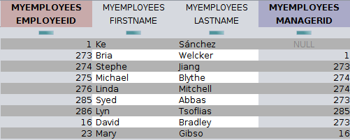
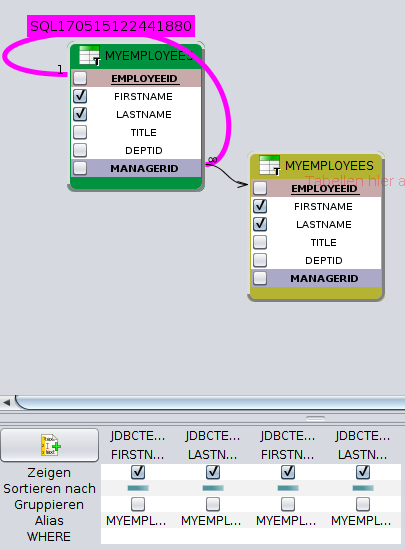
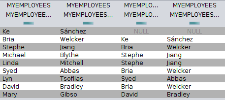
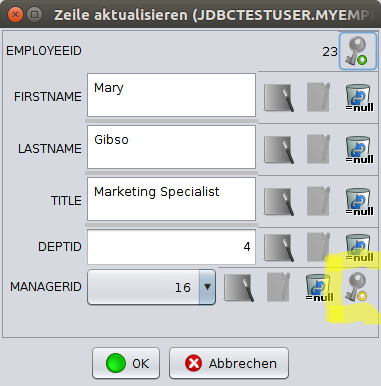
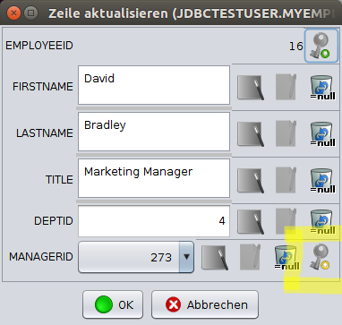
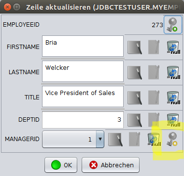
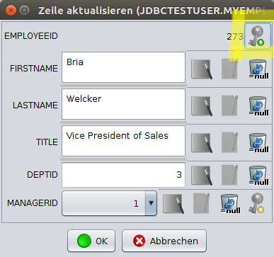
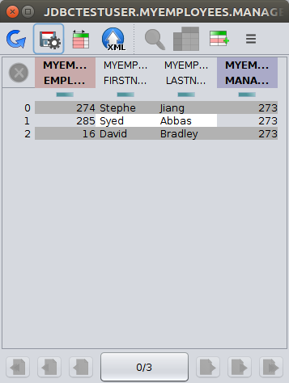

Rekursive Abfragen in der sQLshell
Nachdem auch in Rahmen meiner Arbeit neulich wieder ein rekursives Datenmodell sein hässliches Haupt erhob,musst ich mich damit beschäftigen. Ich fand heraus, dass es für verschiedene DBMS spezielle SQL-Konstrukte gibt, die es erlauben, solche rekursiven Strukturen in einer Query abzufragen. Danach dachte ich nach und stellte fest, dass eines der Features der sQLshell bereits sehr einfaches Arbeiten mit solchen Strukturen ermöglicht:

Das Problem
Manchmal hat man auch in relationalen Datenbanken rekursive Beziehungen - also Strukturen, die eine Hierarchie prinzipiell unbeschränkter Tiefe abbilden können. Ein Beispiel dafür findet man hier - ein Datenmodell, das Informationen zu Flügen zwischen zwei Flughäfen enthält, dem man aber mittels rekursiver Abfragen zum Beispiel alle möglichen Verbindungen zwischen zwei Städten entlocken könnte - einschließlich sämtlicher Zwischenstationen.Ein weiteres immer wieder gern genommenes Beispiel ist die Beziehung zwischen Angestellten und ihren Chefs: Eine Definition für einen solchen Tatbestand könnte die folgende DDL-Anweisung zur Erstellung einer Tabelle widerspiegeln (Ich habe hier ein Beispiel ein wenig verallgemeinert):
CREATE TABLE MyEmployees ( EmployeeID integer, FirstName varchar (30), LastName varchar (40), Title varchar (50), DeptID integer, ManagerID int, PRIMARY KEY (EmployeeID)); ALTER TABLE JDBCTESTUSER.MYEMPLOYEES ADD FOREIGN KEY (MANAGERID) REFERENCES MYEMPLOYEES (EMPLOYEEID);Zum Testen fügen wir noch einige Datensätze in diese Tabelle ein:
INSERT INTO MyEmployees VALUES (1, 'Ke', 'Sánchez', 'Chief Executive Officer',16,NULL); INSERT INTO MyEmployees VALUES (273, 'Bria', 'Welcker', 'Vice President of Sales',3,1); INSERT INTO MyEmployees VALUES (274, 'Stephe', 'Jiang', 'North American Sales Manager',3,273); INSERT INTO MyEmployees VALUES (275, 'Michael', 'Blythe', 'Sales Representative',3,274); INSERT INTO MyEmployees VALUES (276, 'Linda', 'Mitchell', 'Sales Representative',3,274); INSERT INTO MyEmployees VALUES (285, 'Syed', 'Abbas', 'Pacific Sales Manager',3,273); INSERT INTO MyEmployees VALUES (286, 'Lyn', 'Tsoflias', 'Sales Representative',3,285); INSERT INTO MyEmployees VALUES (16, 'David','Bradley', 'Marketing Manager', 4, 273); INSERT INTO MyEmployees VALUES (23, 'Mary', 'Gibso', 'Marketing Specialist', 4, 16);Damit ergibt sich dann der Inhalt der Tabelle (mit zwei verborgenen Spalten) in der sQLshell wie folgt:

Inhaltsansicht der BeispieltabelleDas SQL-Konstrukt
Das SQL-Konstrukt, das bei solchen Problemstellungen hilft nennt sich Common Table Expression - Erläuterungen dazu sind im Netz reichlich zu finden.Allerdings existieren auch Datenbanksysteme, die diese SQL-Erweiterung nicht anbieten - dann muss man die Informationen mühevoll zusammenlesen. Das geht zum einen mit geschachtelten und per UNION verbundenen Abfragen. Dann muss man allerdings selber die korrekte maximale Tiefe der Hierarchie ausloten.
Eine andere Möglichkeit ist es, geeignete Werkzeuge zum Einsatz zu bringen, die dabei unterstützen...
Die Lösung in der sQLshell
Zum einen ist es natürlich möglich, eine Abfrage zu konstruieren, die die Beziehung der betroffenen Spalten als Join modelliert. Das ist - wie in der folgenden Abbildung zu sehen - auch mit dem Visuellen Abfrageeditor möglich.
Erstellung einer rekursiven Abfrage mittels des visuellen AbfrageeditorsDie daraus generierte Abfrage lautet wie folgt:
SELECT MYEMPLOYEES1.FIRSTNAME AS MYEMPLOYEES_1_FIRSTNAME, MYEMPLOYEES1.LASTNAME AS MYEMPLOYEES_1_LASTNAME, MYEMPLOYEES2.FIRSTNAME AS MYEMPLOYEES_2_FIRSTNAME, MYEMPLOYEES2.LASTNAME AS MYEMPLOYEES_2_LASTNAME FROM JDBCTESTUSER.MYEMPLOYEES AS MYEMPLOYEES1 LEFT JOIN JDBCTESTUSER.MYEMPLOYEES AS MYEMPLOYEES2 ON MYEMPLOYEES1.MANAGERID=MYEMPLOYEES2.EMPLOYEEID;Das Ergebnis dieser Abfrage ist im folgenden Screenshot dargestellt - links sieht man Vor- und Nachname des jeweiligen Angestellten und rechts den seines Managers:

Ergebnis der mittels des visuellen Abfrageeditors erstellten rekursiven AbfrageEinfacher und gänzlich ohne die Konstruktion dedizierter Abfragen - visuell oder anderweitig - kommt man mit der sQLshell aus, wenn die rekursive Beziehung mittels Fremdschlüsseln im Datenmodell abgebildet wurde - in diesem Fall existieren in dem Dialog, der für die Anpassung der Zeileninhalte benutzt wird zwei Knöpfe, mit denen man sich zu den referenzierten Datensätzen durchklicken kann. In der folgenden Serie von Abbildungen ist die Recherche nach dem Manager des jeweiligen Angestellten abgebildet - die nächst höhere Ebene der Hierarchie wird jeweils durch Druck auf den hervorgehobenen Knopf erreicht.

Hierarchie - Ebene 0
Hierarchie - Ebene 1
Hierarchie - Ebene 2 Drückt man hier den in der folgenden Abbildung hervorgehobenen Knopf, kehrt man die Richtung der Recherche um - in unserem Beispiel findet man dann alle Mitarbeiter, die organisatorisch direkt unterhalb des jeweiligen Managers angesiedelt sind:
Suche nach allen direkten Untergebenen eines Managers
Ergebnisansicht mit allen direkten UntergebenenTags


Neueste Artikel
-
 Umzug Netzwerklabor abgeschlossen
Umzug Netzwerklabor abgeschlossen
In meinem vorhergehenden Artikel zu diesem Thema habe ich beschrieben, wie man mit einem einfachen Bash-Skript sehr schnell einen rudimentären Router als LXC-Container aufbauen kann.
Weiterlesen... -
LXC Netzwerk Router
Mein Netzwerklabor beruht derzeit noch auf virtuellen Maschinen, die auf VirtualBox beruhen. Ich trug mich schon seit längerer Zeit mit dem Gedanken, diesen Zustand zu ändern.
Weiterlesen... -
Alarmierung über Skripte
Nachdem ich mich in letzter Zeit wieder verstärkt mit den Themen Monitoring und Alarmierung auseinandersetze, habe ich überlegt, ob ich die dabei gewonnenen Erkenntnisse nicht auch dazu nutzen könnte, die bestehende Lösung flexibler zu machen
Weiterlesen...
Manche nennen es Blog, manche Web-Seite - ich schreibe hier hin und wieder über meine Erlebnisse, Rückschläge und Erleuchtungen bei meinen Hobbies.
Wer daran teilhaben und eventuell sogar davon profitieren möchte, muß damit leben, daß ich hin und wieder kleine Ausflüge in Bereiche mache, die nichts mit IT, Administration oder Softwareentwicklung zu tun haben.
Ich wünsche allen Lesern viel Spaß und hin und wieder einen kleinen AHA!-Effekt...
PS: Meine öffentlichen GitHub-Repositories findet man hier.